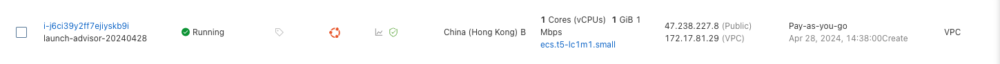

Run EgressGateway on Aliyun Cloud
This article explains how to use the EgressGateway in Alibaba Cloud. In Alibaba Cloud, because IPs (including Elastic Public IPs) are bound to nodes individually, it's impossible to achieve the feature where an Egress IP can migrate between nodes. In the following, we use the node IP (not using a specified IP pool) as the Egress IP. When using a node IP as the Egress IP, if multiple nodes are selected as Egress gateways to achieve HA (High Availability), the Egress IP will switch to another node's IP if one node fails.
Example use cases are as follows:
- In east-west traffic within a VPC network, there are clusters A and B. Cluster B requires the visitor's network IP to be on a whitelist. Therefore, an EgressGateway is deployed in cluster A so that all network traffic accessing cluster B uses the Egress IP. This IP's traffic will apply special policies in external applications.
- In a north-south VPC network traffic scenario, cluster nodes need to access the internet, but business nodes do not purchase public IPs. Pods needing external network access can connect to the external network through the public IP bound to the Egress node within the cluster.
Requirements
- At least 2 nodes in the Kubernetes cluster
- Calico network component installed
Installing EgressGateway
Set Calico's iptables mode to Append before installation.
If you installed Calico via YAML, you should execute the following command:
If you manage Calico through Calico Operator, you should execute the following command:
Add the Helm repository.
Install EgressGateway using Helm.
Check if all Pods are in the Running state.
root@node1:~# kubectl get pods -A | grep egressgateway
default egressgateway-agent-lkglz 1/1 Running 0 86m
default egressgateway-agent-s5xwk 1/1 Running 0 86m
default egressgateway-controller-6cd86df57-xm2d4 1/1 Running 0 86m
Deploying Test Service
We have set up a new machine to act as an east-west server in the VPC network. The IP address of the machine I launched here is 172.17.81.29.

Run the following command to start the test server. Its function is to handle curl ip:8080, which will return the client's IP address. This allows us to check if the Egress IP is functioning properly.
docker run -d --net=host ghcr.io/spidernet-io/egressgateway-nettools:latest /usr/bin/nettools-server -protocol web -webPort 8080
Creating a Test Pod
Check the nodes of our current cluster.
$ kubectl get nodes
NAME STATUS ROLES AGE VERSION
node1 Ready control-plane 66m v1.30.0
node2 Ready <none> 66m v1.30.0
In this setup, we will deploy the Pod to node1. Later, we will implement the capabilities of the EgressGateway, which will allow the Pod on node1 to route to node2, and use node2's IP to access the external network.
apiVersion: v1
kind: Pod
metadata:
name: nginx
labels:
app: nginx
spec:
containers:
- image: nginx
imagePullPolicy: IfNotPresent
name: nginx
resources: {}
nodeName: node1
Check if the Pod is in the Running state.
root@node1:~# kubectl get pods -o wide | grep nginx
nginx 1/1 Running 0 77m 10.200.166.133 node1 <none> <none>
Creating EgressGateway CR
The purpose of the EgressGateway Custom Resource (CR) is to select a set of nodes within the cluster to serve as the Egress gateway. In the definition below, the nodeSelector will match node2 as the Egress gateway.
apiVersion: egressgateway.spidernet.io/v1beta1
kind: EgressGateway
metadata:
name: "egressgateway"
spec:
nodeSelector:
selector:
matchLabels:
egress: "true"
Selecting a Node as the Egress Exit
Check the nodes of our current cluster. The Public IP of my node2 is 8.217.200.161.
$ kubectl get nodes
NAME STATUS ROLES AGE VERSION
node1 Ready control-plane 66m v1.30.0
node2 Ready <none> 66m v1.30.0
In this step, we will label node2 so that it is matched by our EgressGateway defined above.
After labeling the node with kubectl label, you can use the following command to retrieve the EgressGateway Custom Resource and check if the status.nodeList includes the node2 you just labeled.
$ kubectl get egw egressgateway -o yaml
apiVersion: egressgateway.spidernet.io/v1beta1
kind: EgressGateway
metadata:
name: egressgateway
spec:
nodeSelector:
selector:
matchLabels:
egress: "true"
status:
nodeList:
- name: node2
status: Ready
Creating EgressPolicy
The EgressPolicy Custom Resource (CR) is used to match Pods whose traffic will exit the cluster through the Egress gateway. In the definition of the EgressPolicy below, 34.117.186.192 is the address for ipinfo.io, which can be obtained by running dig ipinfo.io.
apiVersion: egressgateway.spidernet.io/v1beta1
kind: EgressPolicy
metadata:
name: nginx-egress-policy
spec:
egressGatewayName: egressgateway
egressIP:
useNodeIP: true
appliedTo:
podSelector:
matchLabels:
app: nginx
destSubnet:
- 172.17.81.29/32 # # East-West Test Service IP
- 34.117.186.192/32 # The IP address for ipinfo.io, used for testing north-south network traffic in clusters.
East-West Network Access Test
At this point, we will use the kubectl exec command to enter the nginx Pod for testing.
We see that the return result is the previously set IP 172.17.81.28, and with this, the experiment using IP as Egress is concluded.
Testing North-South Network Access
To test the Pod's access to north-south network services, we observed that the Pod on node1 used the public IP bound to node2 to complete internet access.